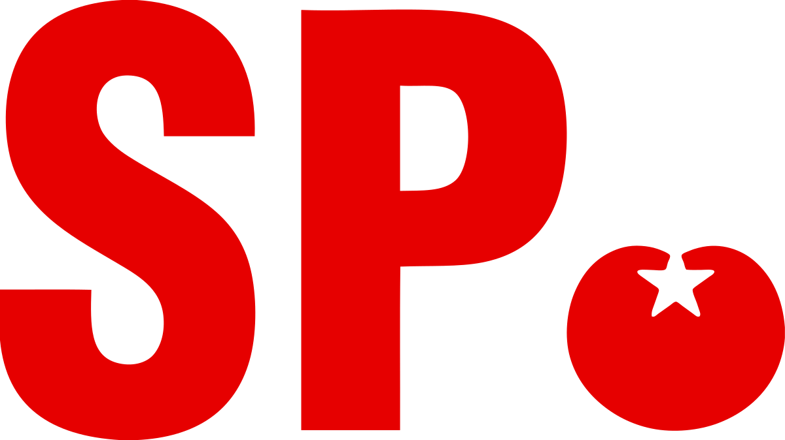

Logo & partijleider SP
ICT
SP vind dat internet steeds een belangrijkere informatiebron wordt.
Het moet voor iedereen toegankelijk zijn en gebruik ervan moet aangemoedigd worden.
SP hecht daarom veel belang aan het opsporen van cybercriminelen en internetters met extremistische ideeen.